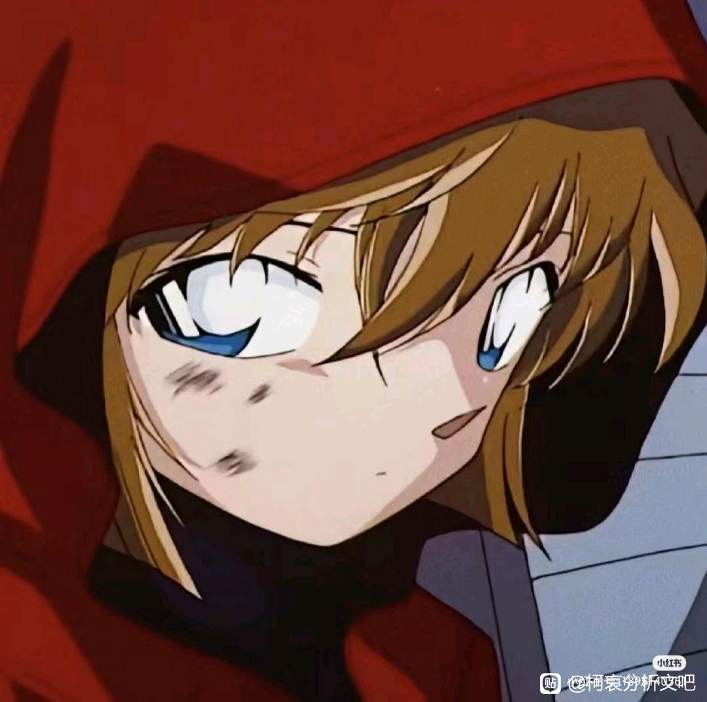
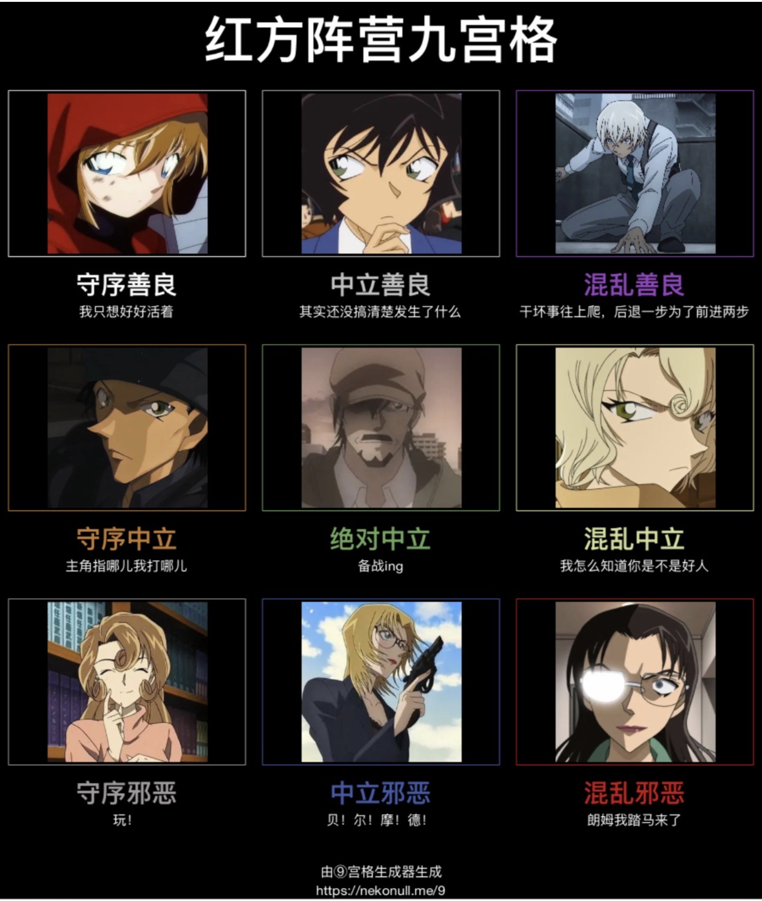

小哀几乎没有对组织的仇恨表现，接理说小哀应该对组织有仇恨，但没有表现出这一点，这是73的塑造缺失吗，还是小哀的人设问题

恐惧大于仇恨。
2024-04-03 10:21 | 瑾墨132:我想表达的就是这意思，为什么只有恐惧而没有仇恨呢2024-04-03 10:29 | 27号车厢🌿:回复 瑾墨132 :恐惧压倒性大于仇恨了，而且灰原也没有后援，宫野家被灭的就剩她一个了。灰原和组织的差距比二战时集中营里的犹太人和炼肥皂水的纳粹差距还大，能活多久都是问题，哪里还有心思仇恨。2024-04-03 10:33 | 27号车厢🌿:回复 瑾墨132 :也就是灰原科学家的身份救了她，换别人这种组织在M26里抓了她能直接挖坑埋了。2024-04-04 04:56 | 玉雨哦:回复 瑾墨132 :也不能说没有仇恨吧 我觉得是有的 就是明美的事
从前期就能看出来，仇恨肯定有，毕竟一家子的四跟组织脱不了关系，只是恐惧更多，组织的力量很大，行为作风也特别狠。
仇恨的前提往往是心怀痛苦。在表现她逐渐开朗，想和大家好好在一起的时候不会过多描写她的仇恨，但如果说评价组织的话，理智站上风，仇恨是必然有的，只是不会表现那么明显。
2024-04-03 10:36 | 某天君00:前期畏惧和丧失希望更多一点，就更不会表现出来了。后期知情人更希望她做的是“远离”而不是“涉足”，尽管就剧情看她绝不会逃避自己注定面对（以及战胜）组织阴影的命运。
我觉得厌恶＞恐惧，未进化成恨。首先，小哀父母在她的视角里死于意外，从小虽然被组织管控，但是她自己是喜欢科学研究的，科研人员在组织里有一定地位，更何况她是有代号的高层。而且在她逃出组织之前是不恐惧组织的人的，（详见广田教授案，她对伏特加嘲笑打趣:"他们一定着急死了"。而且m26伏特加吐槽哀称呼他们"那些家伙"，不屑与他们为伍。）
后来组织用她实验未完成品来杀人，她很厌恶这种行为。再后来姐姐被杀，她以停止做药威胁，然后逃出组织，这里就是厌恶。
其次，与其说她恐惧组织，不如说她只是恐惧连累周围的人，还有就是贝姐（可能以前发生过什么事，所以我觉得可能小哀是跟着贝姐长大也说不定？）杯户饭店顶上和琴对峙的时候，看得出来她其实不怕琴和匹斯可他们。
最后，如果宫野夫妇的死是组织暗杀，或者组织对目前她身边的人做什么的话，才会变成恨（像若狭老师那样）
后来组织用她实验未完成品来杀人，她很厌恶这种行为。再后来姐姐被杀，她以停止做药威胁，然后逃出组织，这里就是厌恶。
其次，与其说她恐惧组织，不如说她只是恐惧连累周围的人，还有就是贝姐（可能以前发生过什么事，所以我觉得可能小哀是跟着贝姐长大也说不定？）杯户饭店顶上和琴对峙的时候，看得出来她其实不怕琴和匹斯可他们。
最后，如果宫野夫妇的死是组织暗杀，或者组织对目前她身边的人做什么的话，才会变成恨（像若狭老师那样）
2024-04-03 15:48 | ◆末成◆:正确的2024-04-03 17:48 | mangomengke07:说不定可以有老师问小哀：你不恨他们吗……？的情节2024-05-01 10:36 | Ω海原穹乃:小哀可是明牌知道姐姐是被琴酒杀的，你怎么说？
因为仇恨没有意义，逃出组织后起初她的身边只有柯南博士三小只，她有什么筹码复仇吗？这种毫无可行性的行为她这种聪明人肯定会忽略。相对的她为什么恐惧，因为一旦暴露她身边的无辜人都会被牵连，这是可预料的一定会发生的，前期如果只有她一个人被杀的话她洒脱的很，但她不能让其他人和她一起承受。
首先，小哀跟明美不一样，她是一出生就在组织的，而且从小没有父母，等于她就是组织养大的，因此她对酒厂的态度一定是复杂的而不是简单的仇恨
然后，柯南这部作品并不提倡复仇，很多案子都是犯人为亲人复仇，但都不被主角所认可（最典的例子，就是鲨鱼海豚那个案子里犯人为父报仇杀了一个人渣，结果兰神还跳出来嘴犯人说什么勇气这个字眼不能用于杀人）
然后，柯南这部作品并不提倡复仇，很多案子都是犯人为亲人复仇，但都不被主角所认可（最典的例子，就是鲨鱼海豚那个案子里犯人为父报仇杀了一个人渣，结果兰神还跳出来嘴犯人说什么勇气这个字眼不能用于杀人）
复仇这种事是很奢侈的

2024-04-03 11:36 | 贴吧用户_GbW789J:有希子不是混中？2024-04-03 11:52 | 冰洁圣天:有希子和玛丽反了吧？2024-04-07 11:35 | 队友thet☞:玩！

在灰原这里自家人的安全大于一切，放美漫里妥妥的家人侠。对于组织有恐惧有憎恨但为了自家人的安全都得靠后，最直接的就是m26给步美拉窗帘盖被子并且提前逃跑。
恨要有恨的意义。恨要能帮到你，那才有用。如果只是无效的恨，那又有什么用呢？既然只是徒增烦恼，又为什要表现出来呢？
不仅不能毁了组织，还会给自己造成麻烦。
不仅不能毁了组织，还会给自己造成麻烦。
我感觉前期的小哀的心绪类似于，恐惧无助滋生的自毁和对整个世界的失望心理，与其仇恨组织，她可能更悲悯自己吧（）
早期的小柯表现出了仇恨但他也付出了代价。
柯哀都没有疯批属性，对他们来说仇恨外露=失去理智=死亡。
柯哀都没有疯批属性，对他们来说仇恨外露=失去理智=死亡。
2024-04-03 17:49 | mangomengke07:正确的
你害怕的东西你不讨厌？？？我不理解你怎么想的 按照你的意思 一些女生还怕蟑螂 但是不讨厌蟑螂 是这个意思吧？
哀很擅长隐藏自己的感情，理智总是占据上风
被犯罪集团抓去从小pua到大，很有可能产生不敢主动对抗的心理
“不恨”才是我喜欢她的地方啊
复仇的恨总有终点，温情的爱才是余生。
2024-04-03 19:14 | 贴吧用户_5726KyK:捉一个南英2024-04-04 22:19 | 瑾墨132:回复 南英的茶馆 :哇！南英！！！
你要不要看看名侦探柯南里面心怀仇恨的都是些什么人？
逃避恐惧理智大于仇恨
安室透死了朋友，但他恨秀一却不恨组织。本堂姐弟死了父亲，仍然兢兢业业也没表现出什么仇恨。赤井秀一父亲失踪女友死亡，还在炖牛肉没有化身复仇者。唯一一个有着“仇恨”的是若狭老师，也只是明确的仇恨朗姆而不是仇恨组织，即便如此她的画风也格外与众不同。所以，整个名柯里，没有人仇恨组织，因为作者并不希望写人物的仇恨，而是想写人物的爱。这不是角色的问题，是作品基调的问题。
2024-04-04 03:35 | 随意♬飘荡:这个解释最合理，名柯强调的是正义，而不是仇恨，小柯消灭组织的原因也是自身的正义观，而不是对琴伏的仇恨。2024-04-04 04:29 | 贴吧用户_0Q8721R:回复 随意♬飘荡 :这就像哈利波特里，最强的咒语是除你武器而不是阿瓦达索命，并不是出于什么理性的思考，而是藏着作者美好的愿景。哈利波特里强调的是“尊重个体的生命”，而青山刚昌想实现的是“让伤痕累累的人过上幸福的日常”。2024-04-04 05:08 | 随意♬飘荡:回复 贴吧用户_0Q8721R :说得没错，所以说名柯的＂最强武器＂就是新志秀三颗银色子弹，代表的是正义。
从琴在对明美说是组织红人的时候看她在组织研究的时候受到的待遇就算有限制也不至于太差
她缺乏直接恨的目标，柯南可以直接恨琴酒。但是对于哀来说，她值得记恨的是整个组织
2024-04-03 23:50 | lxt370:缺乏个人
性格原因，哀是逃命的人，知道自己不是组织对手，一直想的是尽力保护身边的人免受伤害，而不是不惜一切代价干掉组织，但赤井安室就不同，因为他们背后也有组织，想的是己方战胜敌人，仇恨不可能没有，但刻意表现就不符合哀的性格了
而且，哀是个高度理智的人，比柯南还理智，写她的恐惧是为了塑造她的善良，不想让别人因她而死，那写仇恨能塑造什么呢？显然对角色的核心性格塑造是起不到什么明显影响的，说白了就是表现仇恨没用，反而会给她的人设造成负面影响，再恨她也干不掉琴酒，那就是不理智的，也是不必要的，所以就不用表现，而且就算作者不写我们也能想象到她是有仇恨的，那就更没必要写了
二次元的恨是有功利性的，恨一定要转化成复仇的动力。而复仇的人的生活，也基本上会在大仇得报之后结束（心愿了却，不需要再写他了），甚至下一秒自己死掉都可以（比如血字的研究）我们看到的最多的描写就是“他带着笑死去了”，但如果作者一旦是希望他能继续生活下去，就不会过多的描写“恨”，会用其他的情绪冲淡掉。这也是73绝不会让哀在组织覆灭后就离开的证据之一
外表坚强，内心柔软
小哀对外人的感情比较淡薄，本来清冷的性格就是说明了不会有明显激烈的情感，也正是因为这种性格，这里用恐惧会比用恨更能凸显黑衣组织的实力，恐惧是害怕对方会对自己在意的人或事造成伤害，也许一开始会有恨，但如果用恨的话就很难融入日常生活了，所以就算有恨也要在早期把这个情感给弱化掉，因为恨本身就有对立属性
有没有一种可能，青山故意的？灰原无恨，柯南无悲(泪)，毛利无爱(指她从没爱过任何人，除了自己)。
如果再算上一体两面的工滕新一，那更有趣了，工滕新一从没开心过，新一无乐。
世界是什么样的？是中衡的，不昏不暗的，组织杀了你家人，又送你去美国留学，恨肯定是有的，但恨是无力的表现，别人给你一拳，你活着靠别人提供的环境发挥实力，恨，也要有环境来恨，你要是在组织恨，你早就死了，我觉得她恐惧组织，纯粹是在那种环境里呆久的缘故，哀挽救了柯的命运，柯与哀一种光明的新生。大部分人的生活都是死结，总而言之他们都很幸运。
把他送到新一的身边还不偷着乐啊，涂山酒厂的最强红线仙
恐惧为主，仇恨的前提是拜托恐惧
+3
很好奇组织里是谁负责带小志保，无父无母小志保手续上得被人收养吧，法律上的养父母是谁
我的看法是，恐惧是直接而具体的，表现为自己和自己身边人的生命危险，很可能死的很随意，毫无价值。灰原不怕死，她前期有点自毁倾向，但她讨厌自己死的毫无价值。
仇恨是间接的，灰原不像朱蒂老师，组织控制她的同时也在抚养着她。而杀死她父母的人并不具体。总而言之现阶段明确的仇恨目标只有明确的杀了姐姐的琴酒一个人。但是琴酒是一个很可怕的人，她在缓过来有勇气直接面对琴酒之前是不能直接的表现出仇恨琴酒的。
我不知道这么解释你能不能听得懂，我给你举个例子吧。
假设你现在有两个目标，一个是非常笼统的我要做个好人，另一个是我一定要改掉说话吐字不清晰的坏毛病，你觉得哪个目标会在你的日常行为中更具有明确的表现性？
这样子你能理解吗？
仇恨是间接的，灰原不像朱蒂老师，组织控制她的同时也在抚养着她。而杀死她父母的人并不具体。总而言之现阶段明确的仇恨目标只有明确的杀了姐姐的琴酒一个人。但是琴酒是一个很可怕的人，她在缓过来有勇气直接面对琴酒之前是不能直接的表现出仇恨琴酒的。
我不知道这么解释你能不能听得懂，我给你举个例子吧。
假设你现在有两个目标，一个是非常笼统的我要做个好人，另一个是我一定要改掉说话吐字不清晰的坏毛病，你觉得哪个目标会在你的日常行为中更具有明确的表现性？
这样子你能理解吗？